승강기기사 (2005-03-20 기출문제)
1과목: 승강기 개론
1. 엘리베이터의 속도가 90m/min일 경우 지켜야 할 피트 깊이는 몇 m 이상이어야 하는가?
- 1.2
- 1.5
- 1.8
- 2.1
(정답률: 75%)

2. 비상용 엘리베이터에 대한 설명 중 틀린 것은?
- 피난층 및 그 직상 또는 직하층의 승강장에는 카를 부르는 장치가 설치되어 있어야 한다.
- 카는 반드시 모든 승강장의 출입구마다 정지할 수 있어야 한다.
- 최하층 바닥 밑에 설치되는 스위치류는 비상용으로 사용될 때에 확실하게 동작되어야 한다.
- 엘리베이터의 운전속도는45m/min 이상으로 하여야한다.
(정답률: 76%)
3. 에스컬레이터의 디딤판(STEP)이 서로 인접한 홈의중심에서 중심까지의 거리는 몇 mm 이하이어야 하는가?
- 5
- 10
- 15
- 20
(정답률: 48%)
4. 엘리베이터 카 내의 비상조명등의 밝기에 대한설명으로 옳은 것은?
- 램프 중심으로부터 2m 떨어진 수직면상의 조도가1룩스 이상이어야 한다.
- 램프 중심으로부터 2m 떨어진 수직면상의 조도가 10룩스 이상이어야 한다.
- 카 바닥면의 조도가 1룩스 이상이어야 한다.
- 카 바닥면의 조도가 10룩스 이상이어야 한다.
(정답률: 74%)
5. 카가 2대 또는 3대가 병설되었을 때 사용되는 조작방식으로 1개의 승강장 부름에 대하여 1대의 카가 응답하며, 일반적으로 부름이 없을 때에는 다음의 부름에 대비하여 분산 대기하는 복수 엘리베이터의 조작방식은?
- 단식 자동식
- 승합 전자동식
- 군 승합 전자동식
- 군관리 방식
(정답률: 86%)
6. 트랙션 권상기에 대한 설명 중 옳지 않은 것은?
- 헬리컬기어드 권상기는 웜기어에 비해 효율이 높다.
- 주로프에 사용되는 도르래의 피치지름은 로프지름의 40배 이상으로 한다.
- 도르래 재질을 주철로 사용하는 경우, 안전률은 4이상으로 한다.
- 중ㆍ저속용 엘리베이터의 권상기는 주로 웜기어를 사용한다.
(정답률: 80%)
7. 유압식 엘리베이터에서 간접식의 장ㆍ단점에 대한 설명 중 틀린 것은?
- 실린더의 점검이 용이하다.
- 승강로는 실린더를 수용할 부분만큼 커지게 된다.
- 비상정지장치가 필요하다.
- 로프의 늘어짐과 작동유의 압축성 때문에 부하에 의한 카 바닥의 빠짐이 비교적 작다.
(정답률: 72%)
8. 구동 도르래의 홈에 대한 설명으로 옳지 않은 것은?
- U형 홈은 더블랩 방식으로 하면 구동력을 크게 할 수 있다.
- 언더컷 홈이 V형 홈보다 구동력이 크다.
- 로프 수명, 승차감에 영향을 준다.
- 언더컷 홈은 마모가 되어도 마찰력이 거의 변화하지 않는다.
(정답률: 68%)
9. 한쪽방향으로만 오일이 흐르도록 하는 밸브의 명칭은?
- 체크밸브
- 상승용 유량제어밸브
- 하강용 유량제어밸브
- 안전밸브(Relief Valve)
(정답률: 80%)
10. 주로프의 안전율이 10 이상이면 최소 몇 mm 이상의 로프를 사용할 수 있는가?
- 6
- 8
- 10
- 12
(정답률: 73%)
11. 기계실 내에서 주요한 기기들은 기둥이나 벽에서 최소 몇cm 만큼 이격시키는 것을 원칙으로 하고 있는가?
- 20
- 30
- 40
- 50
(정답률: 58%)
12. 3상 교류의 단속도 전동기에 전원을 공급하는 것으로 기동과 전속 운전을 하고, 정지는 전원을 끈 후 제동기에 의해 기계적으로 브레이크를 작동시키는 제어방식은?
- 교류 궤환제어
- 교류 2단 속도제어
- 교류 1단 속도제어
- VVVF 제어
(정답률: 67%)
13. 권상비(Traction ratio)를 바르게 설명한 것은?
- 권상비는 1.0 이하의 수치가 된다.
- 권상비의 값이 낮아지면 로프의 수명이 길어진다.
- 카측과 균형추측의 중량의 차이를 크게 하면 전동기 출력을 줄일 수 있다.
- 카측 로프에 걸린 중량과 균형추측 로프에 걸린 중량의 합을 말한다.
(정답률: 65%)
14. 로프 걸이를 2:1 이상인 로핑으로 할 경우의 단점이 아닌 것은?
- 로프의 수명이 짧아진다.
- 로프의 굵기가 가늘어진다.
- 1본의 로프 길이가 매우 길게 된다.
- 총합효율이 저하된다.
(정답률: 77%)
15. 유입완충기의 성능을 평가하는 항목이 아닌 것은?
- 감속도
- 유입량
- 플런저의 행정
- 플런저의 복귀시간
(정답률: 55%)
16. 정전시의 구출운전장치에 대한 설명으로 틀린 것은?
- 전원은 별도의 축전지 전원을 공급한다.
- 소형 전동기로 권상전동기의 축을 저속으로 돌려준다.
- 인버터의 원리를 이용하여 직류를 교류전원으로 변경하여 공급한다.
- 엘리베이터를 최하층까지 정격속도로 운전한 후 도어를열어 구출한다.
(정답률: 71%)
17. 도어의 안전장치로서 승장 도어가 열린 상태에서 모든 제약이 풀리면 자동적으로 도어가 닫히도록 하는 장치는?
- 도어클로저
- 도어보호장치
- 도어인터록
- 도어머신
(정답률: 81%)
18. 도어 안전장치에 해당되는 것은?
- 역결상검출장치
- 과부하감지장치
- 세이프티 슈
- 록다운정지장치
(정답률: 80%)
19. 비상정지장치에 대한 설명 중 옳지 않은 것은?
- 조속기가 작동한 후에 작동해야 한다.
- 상승방향으로만 작동해야 한다.
- 정격속도의 1.4배 이하에서 작동해야 한다.
- 조속기 로프를 기계적으로 잡아서 작동시킨다.
(정답률: 78%)
20. 워드레오나드 방식에 관한 설명 중 틀린 것은?
- 전동발전기를 사용하여 직류전동기의 속도를제어한다.
- 유지보수가 용이하고 고장이 적다.
- 교류 2단속도에 비하여 승차감이 양호하며 착상시간도짧다.
- 발전기의 계자전류를 변환시켜 출력전압을 변환한다.
(정답률: 61%)
2과목: 승강기 설계
21. 균형추측에도 비상정지장치를 설치해야 하는 경우는?
- 승강로 피트 하부가 통로나 사무실로 사용되는 경우
- 엘리베이터의 정격속도가 120m/min 이상의 고속형인 경우
- 적재하중이 1000kg 이상인 전망용 엘리베이터인 경우
- 정지 층수가 16층 이상인 비상용 엘리베이터인 경우
(정답률: 67%)
22. 유도전동기의 인버터 제어방식에서 10kHz의 캐리어 주파수(carrier frequency)를 발생하여 운전시의 전동기 소음을 줄일 수 있는 인버터 전력용스위칭 소자는?
- ＩGBT
- 평활콘덴서
- SCR
- 다이오드
(정답률: 76%)
23. 유입식 완충기를 설계할 때 고려하여야 할 사항으로 옳은것은?
- 강도는 최대적용중량의85% 중량으로 비상정지장치의 동작속도로 충격시킬 경우 완충기에 이상이 없어야 하며, 플런저는 완전 복귀해야 한다.
- 재료의 안전율은 5cm당 20% 이상의 신율을 갖는재료에서는 2 이상이어야 한다.
- 플런저를 완전히 압축한 상태에서 완전 복구할 때 까지 요하는 시간은 30초 이내어야 한다.
- 행정은 정격속도의 115%에서 충돌할 경우 평균 감속도1G로 정지하기 위해 필요한 값으로 한다.
(정답률: 72%)
24. 로프식 엘리베이터에서 양측의 중량비가 너무 크면 미끄러지게 되어 매우 위험하므로 설계시 검토가 필요하다. 미끄러짐을 결정하는 요소에 관한 설명으로 맞는 것은?
- 권부각이 작을수록 미끄러지기 쉽다.
- 카의 가속도가 작을수록 미끄러지기 쉽다.
- 카의 감속도가 작을수록 미끄러지기 쉽다.
- 시브의 직경이 크면 미끄러지기 쉽다.
(정답률: 75%)
25. 동기 기어레스 권상기를 설계하려고 한다. 주도르래의 직경을 작게 설계할 경우에 대한 설명으로 틀린 것은?
- 소형화가 가능하다.
- 주 로프의 지름이 작아질 수 있다.
- 회전수가 빨라진다.
- 브레이크 제동 토크가 커진다.
(정답률: 68%)
26. 감아 걸기 전동장치에 대한 설명 중 틀린 것은?
- 평벨트를 사용하는 원통형 풀리는 벨트의 벗어짐을 방지하기 위하여 가운데 부분을 약간 오목하게 한다.
- V형 벨트와 V형 풀리를 이용하면 평벨트를 이용하는 경우보다 비교적 소형으로 큰 동력을 전달할 수 있다.
- 로프와 도르래를 이용하는 경우 도르래의 홈의 각도를 45°로 하면 마찰계수가 약 2배가 된다.
- 체인과 스프로켓을 이용하면 정확한 속도비로 큰 동력을 전달할 수 있다.
(정답률: 44%)
27. 엘리베이터 로프의 안전율을 산출하는 식으로 맞는것은? (단, K:초핑계수, N:로프본수, P:로프 1본당 와이어로프의 절단하중[kg], W:적재하중[kg], WC :카자중, Wr : 로프자중[kg]이다.)
- 복원중 (정확한 보기 내용을 아시는분께서는 오류 신고를 통하여 내용 작성부탁 드립니다.)
- 복원중 (정확한 보기 내용을 아시는분께서는 오류 신고를 통하여 내용 작성부탁 드립니다.)
- 복원중 (정확한 보기 내용을 아시는분께서는 오류 신고를 통하여 내용 작성부탁 드립니다.)
- 복원중 (정확한 보기 내용을 아시는분께서는 오류 신고를 통하여 내용 작성부탁 드립니다.)
(정답률: 14%)
28. 엘리베이터의 배치로서 바람직하지 못한 것은?
- 3대를 그룹으로 할 경우는 일렬로 나란히 놓는 배치가 좋다.
- 4대를 그룹으로 할 경우는 일렬로 나란히 놓는 배치가 좋다.
- 6대를 그룹으로 할 경우는 3대 3대 마주보게 하는 배치 가좋다.
- 8대를 그룹으로 할 경우는 4대 4대 마주보게 하는배치가좋다.
(정답률: 81%)
29. 로프식 엘리베이터의 구조에 관한 설명으로 옳은것은?
- 주로프의 직경은 8mm 이상으로 하여야 한다.
- 도르래의 직경은 주로프 직경의 30배 이상으로하여야 한다.
- 기계실에 설치된 고정 도르래에는 반드시 로프 이탈방지장치를 설치하여야 한다.
- 지지보는 철골조, 철근콘크리트조 또는 철골철근콘크리트조로 하여야 한다.
(정답률: 38%)
30. 에스컬레이터의 스텝 폭이 1m, 층고가 3m, 스텝체인 스프로켓의 피치지름이 800mm, 구동체인 스프로켓 피치 지름이1000mm, 에스컬레이터의 경사각이 30°인 경우에 구동체인의안전율은 약 얼마인가? (단, 체인의 보정 파단력은 11000kg으로 한다.)
- 9.8
- 12.5
- 19.6
- 25.1
(정답률: 49%)
31. 적재하중이 1600kg 이고 정격속도가 240m/min 인엘리베이터의 피트 깊이에 관한 기준으로 맞는 것은?
- 3.2m 이상
- 3.4m 이상
- 3.6m 이상
- 3.8m 이상
(정답률: 78%)
32. 전동기 주회로의 전압이 400V를 초과하는 저압일 때 절연저항은 몇MΩ이상이어야 하는가?
- 0.2
- 0.4
- 0.6
- 0.8
(정답률: 69%)
33. 비상정지장치의 적용 중량이 3000kg, 정격속도가 60m/min인 경우, 작동시의 정지거리가 700mm 라면흡수 에너지는 몇kgㆍm인가?(오류 신고가 접수된 문제입니다. 반드시 정답과 해설을 확인하시기 바랍니다.)
- 1400
- 1550
- 2253
- 2400
(정답률: 33%)
34. 다음 조건에서 코일 스프링의 전단응력은 약 몇kg/cm2 인가?
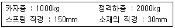
- 5550
- 6590
- 7490
- 8490
(정답률: 46%)
35. 정전시에 작동되는 케이지내의 예비조명장치는 램프중심에서 수직으로 2m 떨어진 지점에서 측정할 때 조도는 몇lx 이상이어야 하는가?(관련 규정 개정전 문제로 여기서는 기존 정답인 1번을 누르면 정답 처리됩니다. 자세한 내용은 해설을 참고하세요.)
- 1
- 2
- 3
- 4
(정답률: 60%)
36. 엘리베이터에서 발생할 수 있는 범죄를 예방하기 위하여실시하는 대책이 아닌 것은?
- 각도어마다 방범창을 부착한다.
- 기준층에 파킹스위치를 부착한다.
- 인터폰을 설치한다.
- 각층강제 정지운전을 부착한다.
(정답률: 64%)
37. 엘리베이터 재료의 설계응력을 설계할 때, 설계응력, 항복점, 허용응력의 일반적인 관계로 적합한 것은?
- 항복점 ＞ 설계응력 ＞ 허용응력
- 설계응력 ＞ 허용응력 ＞ 항복점
- 항복점 ＞ 허용응력 ＞ 설계응력
- 허용응력 ＞ 항복점 ＞ 설계응력
(정답률: 55%)
38. 수평보행기에 대한 설명으로 틀린 것은?
- 파레트형의 경사도는 12도 이하로 한다.
- 이동 손잡이간의 거리는 1.5m 이하로 한다.
- 경사도가 8도 이하인 것의 이동 손잡이의 정격속도는 분당 40m 이하로 한다.
- 경사도가 8도를 초과하는 것의 이동 손잡이의 정격속도는 분당 30m 이하로 한다.
(정답률: 62%)
39. 동력전원설비 용량의 계산에서 여러 대의엘리베이터가 설치되어 있는 경우에 부등율을 적용한다. 부등율을1로 하는경우는?
- 비상용 엘리베이터
- 침대용 엘리베이터
- 전망용 엘리베이터
- 화물용 엘리베이터
(정답률: 80%)
40. 비상용 엘리베이터의 소방용수 유입에 대한 엘리베이터측의 대책이다. 틀린 것은?
- 최상층의 바닥면보다 상부에 부착된 기기에 관해서는 대책이 필요 없다.
- 카가 최하층에 착상할 때 침수할 우려가 있는 기기는 커버(cover)로 씌우는 등의 방적대책을 행한다.
- 승강장 버튼은 비상운전시 무효로 되게 한다.
- 기계실은 피트내 기기에 준하여 대책을 세운다.
(정답률: 58%)
3과목: 일반기계공학
41. 비틀림 각이 20°인한쌍의 헬리컬 기어에서 잇수가 각각40과 80 이고, 치직각 모듈이 5일 때 중심거리는 약 몇mm 인가?
- 281.91 mm
- 300.00 mm
- 315.45 mm
- 339.74 mm
(정답률: 49%)
42. 회전운동을 직선운동으로 바꿀 때 쓰이는 기어는?
- 베벨 기어
- 랙과 피니언
- 헬리컬 기어
- 워엄과 워엄휘일
(정답률: 77%)
43. 경도 시험기 중 해머를 시료에 낙하시켜, 해머가 튀어 올라간 높이에 비례하여 경도를 측정하는 것은?
- 브리넬 경도
- 로크웰 경도
- 쇼어 경도
- 비커스 경도
(정답률: 83%)
44. 다음 중 스러스트 베어링이 아닌 것은?
- 미첼베어링
- 피벗베어링
- 자동조심형 베어링
- 킹스버리베어링
(정답률: 75%)
45. 공기가 흐르는 통로의 크기를 가감시켜서 공기의 흐르는양을 조절하는 것으로 니들형, 격판형 등이 있는밸브를 무엇이라고 하는가?
- 셔틀 밸브
- 체크 밸브
- 차단 밸브
- 유량제어 밸브
(정답률: 70%)
46. 주물에서 중공(中空)부분이 필요할 때 사용하는 목형은?
- 현형
- 회전 목형
- 코어 목형
- 부분 목형
(정답률: 92%)
47. 포와송의 비(poisson's ratio)에대하여 옳게 설명한 것은 ?
- 종변형률과 횡변형률의 곱이다.
- 수직응력과 종탄성계수를 곱한 값이다.
- 횡변형률을 종변형률로 나눈 값이다.
- 전단응력과 횡탄성계수의 곱이다.
(정답률: 76%)
48. 흡입양정이 10m이고, 송출양정이 30m인 펌프의 전양정은 몇m인가?
- 3m
- 20m
- 30m
- 40m
(정답률: 75%)
49. 일정하중을 고온에서 장시간에 걸처서 받은 경우 서서히 변형하는 현상과 가장 관계가 깊은 용어는?
- 어닐링
- 크리프
- 솔바이트
- 염욕
(정답률: 85%)
50. 일반적으로 강(steel)의 래핑(lapping)에사용되는 랩재료로서 가장 적합한 것은?
- 주철
- 황동
- 납
- 목재
(정답률: 69%)
51. 2 m/s로 4ps를 전달하는 벨트 전동장치에서 필요한 벨트의 유효장력은 몇 kgf 인가? (단, 원심력은 고려하지 않는다.)
- 50
- 100
- 150
- 200
(정답률: 39%)
52. 다음 그림은 연강의 응력 변형율 선도이다. 이 그림에서 C점은 무엇을 나타내는가?
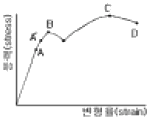
- 비례한도
- 하항복점
- 상항복점
- 극한강도
(정답률: 78%)
53. 선삭이나 밀링가공과 비교한 연삭가공의 특징을 설명한 것으로 올바른 것은?
- 연삭에서 제거되는 칩(chip)은극히 작다.
- 연삭점의 온도는 대단히 낮다.
- 절삭속도가 대단히 느리다.
- 날끝에서는 자생작용이 없다.
(정답률: 67%)
54. 열간 및냉간 가공 후의 불균질한 조직과 결정 입자를 조정하기 위하여 A3 변태점 이상 가열 후대기 중에서 공냉하여 균일하게 하는 열처리 방법은?
- 담금질
- 불림
- 뜨임
- 오스템퍼
(정답률: 74%)
55. 안지름 200 ㎜, 내압 60 ㎏f/cm2의 압력용기의 뚜껑을 8개의 볼트로 조립할 때 사용되는 볼트의 지름은 약몇 ㎜인가? (단, 볼트의 허용 인장응력을 4.5㎏f/mm2으로 한다.)
- 24
- 26
- 28
- 30
(정답률: 43%)
56. 다음 중주물제품에서 크랙(crack)의 원인이 아닌것은?
- 만나는 부분의 살의 두께가 너무 차이가 나다를 때
- 구석이나 만나는 부분이 모지게 되어 있을 때
- 쇳물 아궁이가 매우 작을 때
- 주물을 급랭 시킬 때
(정답률: 83%)
57. 축의 처짐을 작게 하는 설계 방안에 대한 설명 중 잘못된것은?
- 축에 설치되는 부품은 가능한 베어링에서 멀리설치한다.
- 축에 고정되는 풀리, 기어류 및부품들은 가급적 경량화해야 한다.
- 부품의 무게 중심이 기하학적인 중심과 일치하도록 균형을 이루어야 한다.
- 고속류의 축은 부품의 불균형을 배제해야 하는 것 못지 않게 축자체의 균형이 중요하다.
(정답률: 88%)
58. 제품을 중심축에 직각 방향으로 절단하였을 때, 단면이 둥근원모양이다. 이제품의 주형을 만들려면 다음 중 어느 목형이 가장 적합한가?
- 부분형
- 현형
- 회전형
- 골격형
(정답률: 67%)
59. 유압제어 밸브에서 압력제어 밸브에 속하지 않는 것은?
- 릴리프 밸브
- 리듀싱 밸브
- 체크 밸브
- 카운터밸런스 밸브
(정답률: 70%)
60. 체인 전동 장치의 특징으로 틀린 것은?
- 속도비가 정확하다.
- 큰동력을 고효율로 전달한다.
- 내열ㆍ내습ㆍ내유성이 있다.
- 고속 회전에 적당하다.
(정답률: 71%)
4과목: 전기제어공학
61. 권선형 유도전동기의 특성이 아닌 것은?
- 최대 토크는 2차 저항과 무관하다.
- 최대 토크에서 발생된 슬립은 2차 저항이 증가하면 증가한다.
- 최대 토크에서의 슬립은 최대 출력에서의 슬립보다 적다.
- 2차 저항이 증가하면 최대 토크도 증가한다.
(정답률: 41%)
62. 추치제어가 아닌 것은?
- 탱크의 레벨제어
- 자동 아날로그 선반제어
- 열처리로의 온도제어
- 보일러의 자동연소제어
(정답률: 49%)
63. 논리식
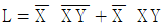
를 간단히 한 식은?- x
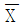
- y
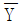
(정답률: 79%)
64. 입력으로 단위계단함수 u(t)를 가했을 때, 출력이 그림과 같은 조절계는?
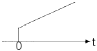
- 2위치 동작
- P동작
- PＩ동작
- PD 동작
(정답률: 65%)
65. 조작기기로 사용되는 서보 전동기의 설명 중 틀린것은?
- 제어범위가 넓고 특성 변경이 용이해야 한다.
- 시정수와 관성이 클수록 좋다.
- 서보 전동기는 그다지 큰 회전력이 요구되지 않아도 된다.
- 급가ㆍ감속 및 정ㆍ역운전이 용이해야 한다.
(정답률: 56%)
66. 그림과 같은 회로에서 전압과 전류의 위상차는?
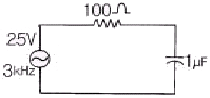
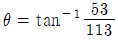
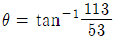
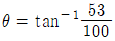
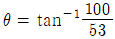
(정답률: 45%)
67. 3상 농형 유도전동기에 상용전원을 투입하여 구동을 했을경우 다음 설명 중 틀린 것은?
- 무부하인 경우 유도전동기는 투입전원의 주파수와 거의같은 속도로 회전한다.
- 부하를 증가시키면 유도전동기의 회전속도가 점차 감소한다.
- 부하가 증가하면 슬립 주파수는 감소한다.
- 3상 유도전동기는 기동시 전류를 억제할 수 있는 저항 이외에 특별한 기동장치를 필요로 하지 않는다.
(정답률: 38%)
68. 다음 중인버터 기능을 갖는 회로는?
- AND회로
- OR회로
- NOT회로
- 기억회로
(정답률: 50%)
69. 적분시간이 2분, 비례감도가 5mA/mV 인PＩ조절계의 전달함수는?
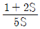
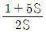
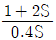
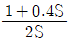
(정답률: 55%)
70. 어떤 제어계의 출력
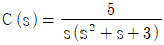
일 때 출력의 시간 함수 c(t)의정상치는 얼마인가?- 3
- 5
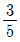
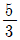
(정답률: 65%)
71. PLC(Programmable Logic Controller)에 대한 설명 중 틀린 것은?
- 무접점 제어방식이다.
- 계전기, 타이머, 카운터의 기능이 있다.
- 산술연산, 비교연산을 처리할 수 있다.
- 시퀀스제어 방식과는 함께 사용할 수가 없다.
(정답률: 59%)
72. 전동기의 역률에 대한 설명 중 옳은 것은?
- 극수가 같고 출력이 틀릴 경우, 출력이 클수록 역률이 좋게 된다.
- 극수가 다르고 출력이 같을 경우, 극수가 증가하면 무부하 전류는 감소하므로 역률은 좋다.
- 권선형은 농형에 비하여 역률이 좋다.
- 기동코일을 크게 하면 할수록 역률은 개선된다.
(정답률: 46%)
73. 100V의 전원에 접속시켜 500W의 전력을 소비하는 저항을 200V의 전원으로 바꾸어 접속하면 소비되는 전력은 몇W인가?(오류 신고가 접수된 문제입니다. 반드시 정답과 해설을 확인하시기 바랍니다.)
- 250
- 500
- 1000
- 2000
(정답률: 54%)
74. 대칭 3상 교류에서는 각상간의 위상차가 몇도 인가?
- 0
- 30
- 60
- 120
(정답률: 60%)
75. 그림과 같은 피드백 회로에서 종합 전달함수는?
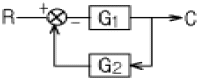
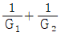
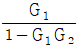
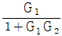
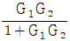
(정답률: 62%)
76. 정전용량이 같은 2개의 콘덴서를 병렬로 연결했을 때의 합성 정전용량은 직렬로 했을 때의 합성정전용량의 몇 배인가?
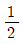
- 2
- 4
- 8
(정답률: 56%)
77. 100V용 전구로 30W와 60W 두개를 직렬로 연결하고 직류 100V 전원에 접속하였을 때 두전구의 상태로 옳은 것은?
- 30W가 더 밝다.
- 60W가 더 밝다.
- 두전구가 모두 켜지지 않는다.
- 두전구의 밝기가 모두 같다.
(정답률: 79%)
78. 제어계의 각부에 전달되는 모든 신호가 시간의 연속 함수인궤환 제어계는?
- 개회로 제어계
- 간헐형 제어계
- 릴레이형 제어계
- 연속 데이타 제어계
(정답률: 63%)
79. 캘빈 더블 브리지로 저저항을 측정할 수있는 이유로서 알맞은 것은?
- 단자의 접촉 저항이나 리드선의 저항을 무시할 수 있으므로
- 검류기의 감도가 매우 양호하므로
- 저저항과 비교될 수 있으므로
- 표준 저항과 비교될 수 있으므로
(정답률: 62%)
80. CNC 장치에 관한 것 중 성질이 다른 것은?
- 소프트 가변형이다.
- 전용기이다.
- ROM을 사용할 수 있다.
- 소프트 변경에 의해 기능의 변경이 가능하다.
(정답률: 54%)